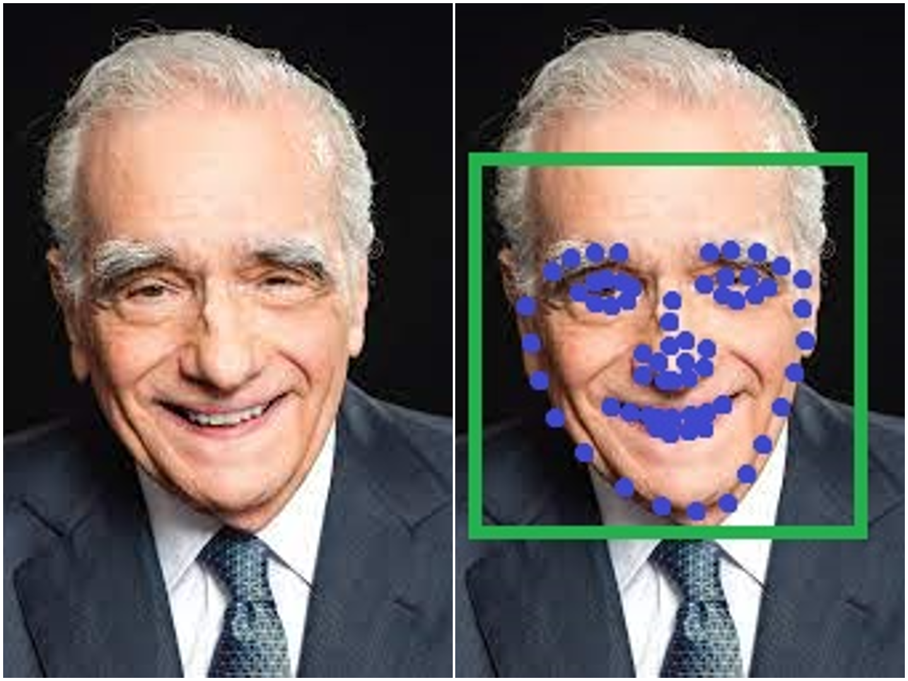

Criminal Face recognition system

I have published a journal paper on the criminal face recognition system on NOVA 24' conference. The Criminal Face recognition system is a machine learning application
that has been trained with over 13,000+ faces and has exhibited
commendable performance and accuracy. I strongly believe that the CFRS (Criminal face recognition system)
can be implemented in real world applications and benefit from its outstanding accuracy.
The Excel Plotter

The Data Analysis web application is a simple yet amazing web tool
that helps visualize data (excel sheets) in the form of charts for the
user no matter the size of the data. The application lets the user to choose
and manipulate columns to picturize only the necessary data to draw conclusions from it later on.